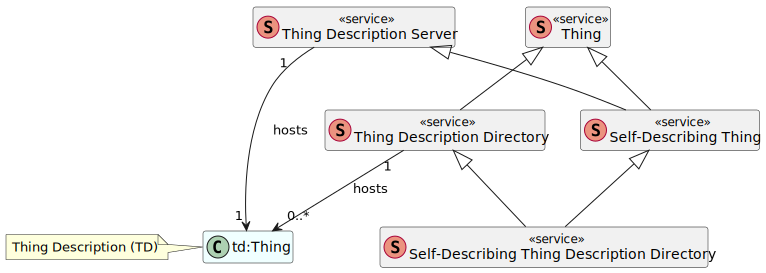

The W3C Web of Things (WoT) is intended to enable
interoperability across IoT platforms and application
domains. One key mechanism for accomplishing this goal
is the definition and use of metadata describing the
interactions an IoT device or service makes available
over the network at a suitable level of abstraction.
The WoT Thing Description specification satisfies this objective.
However, in order to use a Thing its Thing Description
first has to be obtained. The WoT Discovery process described
in this document addresses this problem.
WoT Discovery needs to support the distribution of WoT Thing Descriptions
in a variety of use cases. This includes ad-hoc and engineered systems;
during development and at runtime; and on both local and global networks.
The process also needs to work with existing discovery mechanisms,
be secure, protect private information, and be able to efficiently
handle updates to WoT Thing Descriptions and the
dynamic and diverse nature of the IoT ecosystem.
The WoT Discovery process is divided into two phases,
Introduction, and Exploration. The Introduction phase
leverages existing discovery mechanisms but does not directly
expose metadata; they are simply used to discover Exploration
services, which provide metadata but only after secure authentication
and authorization. This document normatively defines two Exploration
services: for distributing a single WoT Thing Description from a regular
web service, including as a special case self-description;
and a searchable WoT Thing Description Directory
service for collections of Thing Descriptions.
A variety of Introduction services are also described and where
necessary normative definitions are given to support them.
Introduction
The Web of Things (WoT) defines an architecture that supports the integration
and use of web technologies with IoT devices.
The WoT Architecture [[wot-architecture11]] document defines the basic
concepts and patterns of usage supported.
However, the WoT Thing Description [[wot-thing-description11]] is a key
specification for WoT Discovery since it is the purpose of WoT Discovery
to make WoT Thing Descriptions available.
Specifically, WoT Discovery has to allow authenticated and authorized entities
(and only those entities) to find WoT Thing Descriptions satisfying a set of
criteria, such as being near a certain location, or having certain semantics,
or containing certain interactions. Conversely, in order to support
security and privacy objectives, the WoT Discovery process must not
leak information to unauthorized entities. This includes leaking information
that a given entity is requesting certain information, not just the information
distributed in the Thing Descriptions themselves.
There are already a number of discovery mechanisms defined, so we have to
establish why we are proposing a new one. First, many existing
discovery mechanisms have relatively weak security and privacy protections.
One of our objectives is to establish a mechanism that not only uses best
practices to protect metadata, but that can be upgraded to support future
best practices as needed.
Second, we are using discovery in a broad sense to include both local and
non-local mechanisms. While a local mechanism might use a broadcast protocol,
non-local mechanisms might go beyond the current network segment where broadcast
is not scalable, and so a different approach, such as a search service, is needed.
Our approach is to use existing mechanisms as needed to bootstrap into a more
general and secure metadata distribution system.
Third, the metadata we are distributing, the WoT Thing Description, is highly
structured and includes rich data such as data schemas and semantic annotations.
Existing discovery mechanisms based on a list of simple key-value pairs are
not appropriate.
At the same time,
use of existing standards for semantic data query,
such as SPARQL [[SPARQL11-OVERVIEW]],
while potentially suitable for some advanced use cases,
might require too much effort for many anticipated IoT applications.
Therefore in order to address more basic applications,
we also define some simpler query mechanisms.
After defining some basic terminology, we will summarize the basic use cases and
requirements for WoT Discovery. These are a subset of the more detailed and
exhaustive use cases and requirements presented in the WoT Use Cases [[wot-usecases]] and
WoT Architecture [[wot-architecture11]] documents.
Then we will describe the basic architecture of the WoT Discovery process,
which uses a two-phase Introduction/Exploration approach. The basic goal of this
architecture is to be able to use existing discovery standards to bootstrap
access to protected discovery services, but to distribute detailed metadata only to
authorized users, and to also protect those making queries from eavesdroppers
as much as possible.
We then describe details of specific Introduction and Exploration mechanisms.
In particular, we define in detail a normative API for a
WoT Thing Description Directory (WoT TDD) service that provides a search mechanism for
collections of WoT Thing Descriptions that can be dynamically registered by Things or
entities acting on their behalf. The WoT Discovery mechanism however also supports
distribution of single TDs from regular web services, with a special case of this
being self-description.
Finally, we discuss some security and privacy considerations, including a set of
potential risks and mitigations.
Terminology
The fundamental WoT terminology such as
Thing,
Thing Description (TD),
Thing Model (TM),
Property,
Action,
Event,
Anonymous TD,
Discoverer,
Discovery,
Exploration,
Introduction,
Thing Description Server
(TD Server),
Thing Description Directory
(TDD),
Partial TD,
Enriched TD
are defined in Section 3
of the WoT Architecture 1.1 specification [[?wot-architecture11]].
Architecture
shows an overview of the WoT Discovery process.
Discovery uses a two-phase architecture to resolve the competing requirements to be
both open and to restrict access to metadata to authorized entities.
In the first phase, one or more of a set of relatively open
"Introduction" mechanisms may be used to generate a set of candidate URLs.
These URLs do not themselves contain metadata,
but are used in the second stage to reference "Exploration"
services that can actually provide metadata, after authentication,
in the form of Thing Descriptions.
Discovery architecture overview.
A set of open Introduction mechanisms provides a set of URLs, which
point at Exploration services that only provide metadata (TDs) after suitable
authentication. Thing Links and Thing Description Directories provide
additional flexibility but retrieving further results from these is
at the discretion of the application.
The intention is that Introduction mechanisms are relatively open "first contact"
mechanisms to provide a starting point for the rest of the Discovery process.
In this document we specify details on several Introduction
mechanisms, suitable for different use cases, including both local and non-local
scenarios, but Introductions can in fact be provided by any mechanism that can return a URL.
Introductions, however, do not include any security or privacy controls and
so should not provide metadata directly.
Instead, the URLs provided by Introduction mechanisms reference
"Exploration" services. Exploration services actually do provide metadata,
but only after suitable authentication and access controls have been applied.
The Discovery process can produce a set of URLs as output from
its Introduction phase, even if only one Introduction mechanism is used
(some Introduction mechanisms can themselves return multiple URLs).
The final output after the Exploration phase
can also be a set of Thing Descriptions.
Each URL provided by the Introduction phase always points at an
Exploration service endpoint that will return a single Thing Description.
In the simplest case this URL references an ordinary resource
provided by a web server which provides the Thing Description of a Thing
describing an IoT endpoint device.
As a special case of this, for self-describing Things an Introduction URL might
point directly at an endpoint provided by a
Thing serving its own Thing Description.
In general Thing Descriptions might be provided in various ways and
in particular may not be self-describing.
For example,
brownfield devices not designed with the WoT
specification in mind will not be capable of serving their
own Thing Descriptions;
battery-powered devices may not be online
most of the time; and
some devices may not be powerful enough to manage and
serve TDs directly.
The Thing Description for such Things should be provided
by separate services.
This document specifies two special cases that allow for more flexibility:
A Thing Description referenced by an Introduction URL
may describe a Thing Description Directory service.
A Thing Description Directory service (which is still a Thing)
maintains a (possibly dynamic) database of Thing Descriptions.
Thing Description Directories that maintain large numbers of
Thing Descriptions may also support queries that can be used to
selectively retrieve Thing Descriptions.
The second special case is a
Thing Link.
A Thing Link is also a Thing Description,
but rather than describing a Thing directly, it holds a link to
a Thing Description hosted elsewhere.
A Thing Description Directory can also store Thing Links
which can redirect to other Thing Description Directories,
allowing for a linked directory structure.
It is not mandatory for the Discovery process to retrieve
the contents of Thing Description Directories and return them as
part of the results,
because in general this might result in a huge set of results.
Instead the application
should scan the results for Thing Description Directory TDs and
decide whether to retrieve TDs from them, possibly selectively.
Likewise, it is not required to follow Thing Links automatically;
instead the application may choose to follow them selectively.
Discoverer Process
In this section we will describe the WoT Discovery process from the point of view of a client,
and what it means to say that a client supports WoT Discovery.
We will use the term Discoverer for an entity that is a client of the WoT Discovery
process.
A Discoverer may or may not be a full Consumer.
A Discoverer does however need to read and extract information from special TDs for Directories
and Thing Links and use specific affordances and links provided in them.
Conversely, a Consumer may not support Discovery, although it is recommended
[[wot-architecture11]].
The WoT Discovery process is designed so that nearly any client that can fetch a single TD
given a single URI can be said to support WoT Discovery.
Of course, Discoverers may support more powerful Discovery mechanisms, but some of these
have additional requirements.
Some Introduction mechanisms can return multiple URLs,
each of which can in turn be used to fetch at least one TD.
So even without a TDD, it is possible to discover multiple TDs.
The following assertions describe the specific responsibilities of a Discoverer:
A Discoverer MUST support at least one Introduction mechanism.
The simplest Introduction mechanism, Direct, simply provides a single URL of a target TD.
This assertion results in different minimal requirements depending on
which Introduction mechanism is selected out of the several available.
For example, when Direct is used as the sole Introduction mechanism,
at a minimum a Discoverer must be able to accept a single URL pointing at a TD.
Note, however, that this TD could still be describing a Directory.
Another option would be for a Discoverer to implement, as its sole
Introduction mechanism, an "automatic" Introduction mechanism such as
DNS-SD, possibly in combination with mDNS.
In this case the application
code running in the Discoverer
would not have to supply any additional information to invoke Discovery.
A Discoverer MUST support fetching a TD from at least one URL provided as part of the Introduction process.
In other words, not only must a Discoverer accept URLs pointing at TDs, it must be
able to fetch that TD, for example by using a GET for an HTTP URL.
It is permissible to split the implementation of a Discoverer into two components, one that
fetches/reads a TD and sets up a configuration during installation to be used by a
run-time component that cannot itself read TDs.
In this case, however, the latter component is not by itself a Discoverer.
A Discoverer MAY support multiple invocations of the same Introduction mechanism.
If multiple invocations of a single Introduction mechanism is supported,
or if multiple Introduction mechanisms are used, then the Discoverer needs to
manage a set of Introduction results.
Some Introduction mechanisms themselves return a set of results, e.g. CoRE-RD, DID, or DNS-SD.
Some mechanisms, such as scanning Bluetooth beacons, may intrinsically result in separate multiple "invocations".
However, this Discoverer requirement is optional to support an important special case:
it is permissible to have a simple
Discoverer that only supports a single invocation of a Direct Introduction,
directly specifying a single TD via a URL.
A Discoverer MUST be able to merge URLs resulting from
multiple Introduction mechanisms, multiple results from a single Introduction mechanism,
and multiple Introduction invocations into a single set.
Note that even if only one Introduction mechanism is supported multiple results might be
produced.
This assertion states that the overall output of the Introduction phase is
a single set of URLs.
The word "set" is used here in the mathematical sense: the results are unordered and unique.
Uniqueness means that if multiple Introductions have the same result, they are merged into
a single result.
If the Discoverer only supports one Introduction mechanism and that mechanism
can only produce one URL, then the "merge" is trivial.
A Discoverer MUST be able to identify whether a TD fetched from an
Introduction URL has Thing Directory
or Thing Link type.
This implies that the Discoverer needs to be able
to check the @type field and make this distinction.
A Discoverer can decide whether or not to follow links or fetch TDD contents.
There are some use cases where a Consumer may not expand certain URLs, for example links pointing
at external resources, or when a TDD contains many TDs and fetching them all
would exceed the Consumer's memory processing capabilities.
A Discoverer MAY fetch additional TDs from any Exploration mechanism
described in its initial set of TDs (including, in particular, Thing Description Directories)
and add them into the set of TD results.
This only adds the results of fetching TDs from an Exploration mechanism to the set of
results. These new results do not delete the original TD describing the Exploration mechanism.
A Discoverer implementation can decide whether or not to fetch TDD contents.
Implementers should consider the fact that TDDs may be large and fetching the contents of an entire TDD
might be prohibitively expensive.
A Discoverer MAY fetch source TDs from the targets of the links in a Thing Link
described in its initial set of TDs and add them into the set of TD results.
This only adds the results of fetching TDs from a Thing Link to the set of
results. These new results do not delete the original TD describing the Thing Link.
A Discoverer implementation can decide whether or not to fetch the targets of Thing Links.
A Discoverer MAY fetch additional TDs iteratively from any Thing Link or
Exploration mechanism described in its set of TDs and add them into the set of TD results.
This only adds the results of fetching TDs from an Exploration mechanism to the set of
results. These new results do not delete the original TD describing the Exploration mechanism.
A Discoverer MAY terminate fetching additional TDs at any point or for
any reason.
A Discoverer MAY fetch additional TDs by following links or fetching
additional TDs from Exploration mechanisms (e.g. TDDs) in any order.
The Discoverer can fetch additional TDs in any order from any Exploration mechanism and is not
required to use all of them.
A Discoverer MUST track which TDs describing links or Exploration mechanisms
have already been fetched and avoid fetching duplicate results.
This is to avoid infinite loops. Note that Thing Description Directories can easily refer to each other,
for example, so fetching the TDs from a TDD, then fetching all those TDs will give another copy of the
original TDD's TD. This second copy should NOT trigger further fetches.
Note that tracking cannot depend only on the value of "id" fields in TDs since this
field is optional.
The above process supports a way to let Directories reference other Directories without duplicating their TDs:
a Directory wanting to reference other Directories should include a Thing Link with a "describedby" relation to the
TD of the other Directory service. Then the above process would expand the Thing Link to obtain the actual TD of the Directory,
and then (optionally) use the appropriate Directory affordance to access the contents of the linked Directory.
Note that such a Thing Link points at the TD of the Directory, not at the Directory itself. These
may or may not be hosted in the same location.
Recursively fetching the contents of such linked directories, especially without a specific
query or filter, could easily result in downloading a large amount of data. Such recursive expansion should be limited to use
cases that require it, such as inventory, auditing, or indexing.
URLs for Directory services can also be
used with the federation capabilities of SPARQL queries, noted below, which in most cases will be a more efficient way
to collect specific information from a set of distributed directory services.
However, SPARQL requires the URL of a SPARQL endpoint for such federation, which can be found in the TDs
of Directories supporting SPARQL queries. This is not the same as the URL pointing at the TD of a Directory.
Introduction Mechanisms
This chapter describes mechanisms for initial contact with
Things or Thing Description Directories.
Any of the following mechanisms may
be provided by the Thing or the Thing Description Directory to Consumers.
The result of an introduction mechanism is always a URL (address) of an exploration service
which can be used to obtain detailed metadata (TDs) after suitable authentication.
It is also possible for multiple introduction mechanisms to be used and the results merged.
No particular introduction mechanism is mandatory, as long as the URL of at least one
exploration service is somehow obtained.
Direct
To obtain an URL of an exploration service, any mechanism that results in a single URL MAY be used.
This includes Bluetooth beacons, QR codes, and written URLs to be
typed by a user.
A request on all such URLs MUST result in a TD as prescribed in
[[[#exploration-mech]]].
For self-describing Things, this can be the TD of the Thing itself.
If the URL references a Thing Description Directory, this MUST be the Directory Description of the
Thing Description Directory.
Well-Known URIs
A Thing or Thing Description Directory MAY use the Well-Known Uniform Resource Identifier [[RFC8615]]
to advertise its presence.If a Thing or Thing Description Directory use the Well-Known Uniform Resource Identifier [[RFC8615]] to advertise its presence, it MUST register its own Thing Description
into the following path:
/.well-known/wot.
When a request is made at the above Well-Known URI, the server MUST return
a Thing Description as prescribed in [[[#exploration-mech]]].
The service name in Well-Known URI (wot) is tentative.
"Well-Known URIs" registry and contents of registration request is described in Section 3.1 of [[RFC8615]].
DNS-Based Service Discovery
A Thing or Thing Description Directory MAY use DNS-Based Service Discovery (DNS-SD)[[RFC6763]].
This can be also be used on the same local network in combination with Multicast DNS (mDNS)[[RFC6762]].
In DNS-SD, the format of the Service Instance Name is Instance.Service.Domain.
The Service part is a pair of labels following the conventions of [[RFC2782]].
The first label has an underscore followed by the Service Name,
and the second label describes the protocol.
The Service Names _wot and _directory._sub._wot
are tentative. The following Service Names are used in the existing implementations:
_wot,
_device._sub._wot,
_directory._sub._wot,
_webthing,
_wot-servient.
To use a Service Name, registration to "Underscored and Globally Scoped DNS Node Names"
Registry [[RFC8552]] is required.
In addition, the following information MUST be included in the TXT
record that is pointed to by the Service Instance Name:
td
Absolute pathname of the Thing Description of the Thing or Directory Description of the Thing Description Directory.
type
Type of the Thing Description, i.e. Thing or Directory.
If omitted, the type is assumed to be Thing.
The following key/value pairs are used in the existing implementations: retrieve:
Absolute path name of the API to get an array of Thing Description IDs
from the directory service. register:
Absolute path name of the API to register a Directory Description with the Thing Description Directory. path:
The URI of the thing description on the Web Thing's web server td:
Prefix of directory service API tls:
Value of 1 if the Web Thing supports connections via HTTPS.
An example sequence of discovery of Thing using DNS-SD and mDNSAn example sequence of discovery of Thing Description Directory using DNS-SD and mDNS
CoRE Link Format and CoRE Resource Directory
A Thing or Thing Description Directory MAY advertise its presence using the
Constrained RESTful Environment (CoRE) Link Format [[RFC6690]].
A Thing or Thing Description Directory MAY use the CoRE Resource Directory [[CoRE-RD]]
to register a link to the Thing or Directory Description.
The resource type (rt) of the Link that targets the Thing Description of the Thing
MUST be wot.thing.
The resource type of the Link that targets the Directory Description of the Thing Description Directory
MUST be wot.directory.
The resource types wot.thing and wot.directory are tentative.
See also .
DID Documents
A Thing or Thing Description Directory MAY advertise its presence using
the Decentralized Identifier (DID) [[DID-CORE]].
This section defines the supported exploration mechanisms
after providing some common background material.
Overview

The high-level class diagram of the exploration mechanisms,
depicting how Thing Description Servers and Thing Description Directories provide TDs.
A Self-describing Thing is a special case of a Thing Description Server that is also a Thing.
A Thing Description Directory acts as a Thing Description Server for each
Thing Description it contains.
[[[#exploration-class-diagram]]] depicts the high-level information
model for TD Servers (serving single TDs, including those for self-description)
and Thing Description Directory services.
A Thing Description Directory may contain TDs
and at the same time is also a Thing, which means it has its own TD.
A directory also hosts web service endpoints
for retrieving individual TDs for other Things
and each of these can be used as a TD Server.
A Thing may in general host its own TD in which case it
is a Self-Describing Thing.
Self-description is not mandatory for directories,
but Self-Describing Thing Description Directories are possible
that are both Thing Description Directories and Self-Describing Things.
The two basic exploration mechanisms are described in
[[[#exploration-server]]] and [[[#exploration-directory]]].
Ontology
The ontology of Thing Descriptions in the Discovery context.
[[[#discovery-class-diagram-ontology]]] illustrates the Discovery ontology
as an extension of the Thing ontology.
The ontology includes a class for metadata that are associated with
TDs stored in a directory.
This class is called `RegistrationInformation` and described as part
of the directory specification in [[[#exploration-directory-registration-info]]].
The Discovery ontology also defines two new Thing Description classes,
described in the following sections,
that may be used to model special exploratory metadata:
ThingDirectory and
ThingLink.
`ThingDirectory`
The type URIs used below are tentative and subject to change.
A TD which describes a Thing Description Directory instance MUST use type `ThingDirectory` from the
discovery context or URI `https://www.w3.org/2021/wot/discovery#ThingDirectory`.
A TD of this class can be derived from Directory's Thing Model; see [[[#directory-api-spec]]].
`ThingLink`
The type URIs used below are tentative and subject to change.
A TD which describes a reference to another TD MUST use type `ThingLink` from the
discovery context or URI `https://www.w3.org/2021/wot/discovery#ThingLink`.
A Thing Link MUST define the referenced TD as a Link with
`describedby` link relation type, `application/td+json` media type
and `href` set to the target URL.
[[[#example-td-link-type]]] is an example Thing Link.
A Thing Link can be used in various scenarios. For example:
A self-describing Thing with limited computational resources intends
to describe itself: host a minimal TD (Thing Link) locally
and references a larger one with the full details hosted at a
different URL, perhaps in a directory.
A self-describing Thing or proxy has a very large or dynamic description:
registers a small or static TD (Thing Link) in a
directory which references the actual TD hosted at the edge.
Security Bootstrapping
The purpose of an exploration service is to serve TDs, but only after suitable
authentication, and only to authorized parties.
However, in some cases a Discoverer may not know what security credentials are
needed to access a TD via an exploration service, particularly in ad-hoc scenarios.
Since upon first access to an exploration service a Discoverer will not yet
have access to the TD if suitable authentication credentials are not provided,
the Discoverer can't depend on the security metadata
held in TDs to know what kind of authentication and authorization information is needed.
If the Discoverer has no prior knowledge,
it will have to depend on existing security negotation support to
bootstrap access, at least to the TD itself.
We define the following for the HTTP protocol, for which security negotiation
processes already exist.
However, most of the HTTP negotiation processes assume there is a human user in the loop,
but this is also appropriate for WoT Discovery, since this problem will
typically occur when a user is trying to access a public WoT service or perform
integration of a new device. In this case the purpose of negotiation is to
provide guidance on what credentials are needed to access the system.
In cases when exploration services are being used to
automate system management it would be best to pre-establish what credentials (and
authentication mechanisms) are needed to access the relevant exploration services
and security bootstrapping would not be required.
For this reason security bootstrapping is not a mandatory feature, and can
be omitted or disabled on devices that are to be used with pre-established
security mechanisms.
Security bootstrapping may also only be necessary on the first access to
a TD. Once a Discoverer has determined what credentials and authentication mechanism
are required to access a particular exploration service, they can retain this information
and attempt to use them for future accesses.
Note however that depending on the security scheme used, credentials themselves
may expire and may need to be re-established periodically.
Security
bootstrapping MAY be provided on any HTTP endpoint that serves a TD.
As mentioned above, disabling or omitting security bootstrapping is permissible if
security mechanisms have been previously established. For example, if an installation
wants to use the OAuth2 client flow and provide potential clients with
an address of an authentication server to use in advance, then security bootstrapping
can be disabled, since the alternative would be to include other (and potentially
weaker) forms of authentication.
In the HTTP protocol, the authentication and authorization mechanisms to be used can generally be negotiated by
the HTTP server returning a "401 (Unauthorized)" response code in conjunction with
a `WWW-Authenticate` header that specifies the information required.
To gain access, the client then needs to make another request
with the necessary information.
There
are several authentication schemes registered with IANA.
However, not all of these are in wide use, some are experimental, and there is only
partial overlap with the schemes supported by TDs.
Also, note that the oauth scheme in the IANA registration refers
to OAuth1, which is deprecated, so it should not be used.
The relevant OAuth2 flow, the code flow, instead of a 401 response
begins with a redirection to an authentication
server, eventually resulting in credentials (bearer tokens in the case of WoT)
that can be used for access.
Given these considerations,
to enable security bootstrapping on a wide variety of devices as well
as on browsers, the following constraints should be observed:
If security bootstrapping is enabled on an exploration service,
after initial contact using the URL provided
by an introduction mechanism, the exploration service
MUST reply with either an HTTP "401 (Unauthorized)" response code
or (in the case of OAuth2) with either a HTTP "302 (Found)" or "303 (See Other)" response code if appropriate
authentication information has not been provided but access can be granted
when it is.
Note that if the exploration service does not want to provide access for
some reason, or if security bootstrapping is disabled,
it can ignore the request or reply with another code such as 404 or 403.
Also, if no authentication is required, then the
system can reply immediately with the requested TD as if authentication information
were provided.
Bypassing authentication however is only
appropriate if the TD served as a response does not contain and cannot be used to infer
Personally Identifiable Information; see .
If security bootstrapping is enabled on an exploration service
using one of the following IANA-registered
HTTP Authentication Schemes: Basic, Bearer, or Digest,
then a 401 HTTP response
at an API endpoint intended to serve a TD
MUST include a WWW-Authenticate header
and any other headers
describing the required authorizations.
For details of the requirements, the IANA registry should be consulted for
each of the above authentication schemes.
If the OAuth2 code flow is used during security bootstrapping, the
"302 (Found)" or "303 (See Other)" response code MUST be used for redirection
to the authentication server,
with access credentials eventually being represented with bearer tokens.
Note that the other OAuth2 flows supported in WoT Thing Description 1.1,
client and device, both expect the initial access
to be to the authentication server, not the final endpoint, and so cannot be
used via security bootstrapping.
These requirements also apply only to endpoints of exploration services that might need
to support security bootstrapping, that is those that serve TDs,
not to other endpoints that might be
provided by the same exploration service.
In particular, these requirements apply
only to URLs that can be referenced by introduction mechanisms, not to (for example)
event subscription endpoints.
There are relevant Security and Privacy Considerations in [[wot-architecture11]]
and [[wot-thing-description11]]
regarding when authentication is required for access
to TDs and the use of secure transport.
See also [[[#privacy-considerations]]].
In summary, secure transport (e.g. TLS) is required for public services and strongly recommended
even on private networks (even if there is no authentication requirement, to
protect the confidentiality of queries), and serving requests without authentication and authorization should only be considered
in limited circumstances when no Personally Identifiable Information is
present or can be inferred.
Thing Description Server
Any web service that can be referenced by a URL and return a TD with
appropriate authentication and access controls can be used as an
exploration mechanism.
We will refer to this as a Thing Description Server or TD Server.
A TD Server does not need to be a Thing.
In particular, a TD can be hosted on an ordinary web server
and referenced by its URL.
A TD Server can be used to support self-description.
For self-description, a Thing
hosts its own TD and makes it available via a web resource
identified with a URL. Such a web resource however is not included
as an affordance in the TD itself. This web resource may or may not
be the same as the well-known URL used as an Introduction mechanism
defined in .
Use of secure transport is subject to assertions given in the
Security Considerations and Privacy Considerations sections of the
[[wot-architecture11]] and [[wot-thing-description11]] specifications,
which define scenarios where secure transport is recommended or mandatory and mutual
authentication is recommended.
A TD Server distributing a TD
using the following protocols
is subject to the following constraints:
HTTP
An HTTP-based TD Server providing a TD
MUST serve that resource with a `GET` method.
A successful response from an HTTP-based TD Server providing a TD
MUST have 200 (OK) status and the TD in the body.
A successful response with JSON serialization MUST contain `application/json`
or more specifically, `application/td+json` in the Content-Type header.
The default serialization format for successful response bodies MUST be
JSON, with JSON-LD 1.1 [[JSON-LD11]] syntax.
The JSON-LD syntax allows semantic extensions and processing.
An HTTP-based TD Server providing a TD
MAY provide alternative representations through
server-driven content negotiation, that is by honoring the
request's Accept and Accept-Encoding headers and responding with the supported
TD serialization and equivalent Content-Type and Content-Encoding headers.
An HTTP-based TD Server providing a TD
MAY provide modified TDs or error responses
using a different default language after server-driven content negotiation,
that is by honouring the request's Accept-Language header.
An HTTP-based TD Server providing a TD
MUST respond to `HEAD` requests by returning only the headers
equivalent to those returned by a `GET` request to the same endpoint.
This enables clients to retrieve HTTP headers such as the Content-Length in advance
to know the size of the TD (in bytes) and decide on an efficient query strategy.
In constrained environments, a single TD may be too large to process
for the server or clients.
See [[[#perf-incremental-transfer]]] for protocol-specific recommendations on
incremental transfer of the requested payload.
Error responses:
401 (Unauthorized): No authentication.
403 (Forbidden): Insufficient rights to the resource.
CoAP
A CoAP-based TD Server providing a TD
MUST serve that resource with a `GET` method.
A successful response from a CoAP-based TD Server providing a TD
MUST have a 2.05 (Content) status, contain a Content-Format option
with value 50 (`application/json`) or 432 (`application/td+json`),
and the TD in the payload.
Note that the payload might be split over multiple message exchanges using
block-wise transfer [[RFC7959]].
A CoAP-based TD Server providing a TD
MAY provide alternative representations through
server-driven content negotiation, that is by honouring the
request's Accept option and responding with the supported
TD serialization and equivalent Content-Format option.
A CoAP-based TD Server providing a TD
SHOULD respond to requests containing a Size2 option by including
the size estimate of the TD in its next response.
This is relevant when obtaining a TD using block-wise transfer and
enables clients to abort the retrieval if the total payload size should be too
large for them to process.
In constrained environments, a single TD may be too large to process
for the server or clients.
See [[[#perf-incremental-transfer]]] for protocol-specific recommendations on
incremental transfer of the requested payload.
Error responses:
4.01 (Unauthorized): No authentication.
4.03 (Forbidden): Insufficient rights to the resource.
Thing Description Directory
A Thing Description Directory (TDD or Directory for short) is a
Thing that provides a service to manage a set of TDs describing other Things.
Information Model
To Do: Formal definition of information contained in a directory and its organization.
As shown in [[[#exploration-class-diagram]]],
the Thing Description Directory can contain zero or more TDs.
For every TD, the directory maintains additional metadata
for bookkeeping and search purposes.
These are described in
[[[#exploration-directory-registration-info]]] and
[[[#exploration-directory-anonymous-td]]].
A TD that embeds such additional metadata as part of the
interaction with the directory is called an Enriched TD.
Registration Information
The ontology of a TD in the Discovery context was
introduced in [[[#discovery-class-diagram-ontology]]].
The `RegistrationInformation` class is associated with TDs that are
stored in a directory.
The following table lists the registration information attributes for
use within TDs that embed or reference the Discovery context.
Note that only an Enriched TD embeds the registration information.
An Enriched TD
MUST contain in its @context the URI https://w3c.github.io/wot-discovery/context/discovery-context.jsonld.
In this table,
client refers to the producer or consumer of a TD and server refers to
the Thing Description Directory.
Vocabulary term
Description
Client Assignment
Server Assignment
Type
created
Provides information when the TD instance was
created inside the directory.
This MAY be set by the directory and returned to consumers.
Provides the absolute time for when the TD instance registration expires.
The producer MAY set this to indicate the absolute expiry time
during the registration.
For servers that support expirable TDs:
If `ttl` (relative expiry) is present, the server MUST ignore
client assignments to `expires` and instead compute and set it internally.
Time-to-live: relative amount of time in seconds from the registration time
until when the TD instance registration expires.
The producer MAY set this to indicate the relative expiry time
during the registration.
For servers that support expirable TDs:
The server MUST use `ttl` to calculate the `expires` (absolute expiry) value.
optional
read-only
number
retrieved
The time at which the TD was retrieved from the server.
This is useful for clients that intend to process other absolute timestamps but
do not have an internal clock or other means of acquiring the current time.
Section [[[#exploration-directory-registration-info]]] introduces some attributes to
specify and discover the expiry time of registered TDs.
Producers can set the expiry time to inform the directory and other consumers
about the validity of the TD registrations.
The expiry is also a useful indicator to inform the consumers about
expiry of dynamic TDs, e.g. when changes to metadata such as
geolocation or properties are expected to be valid for a limited period.
Consumers may rely on the expiry time to know how long a retrieved TD
will be valid and when they need to request a more recent one.
Consumers who retrieve an expired TD may consider it as metadata of an
inactive client.
For the servers, the expiry time is useful for implementing automatic
removal of obsolete or accidental registrations.
Servers SHOULD periodically purge TDs that are past
their expiry times.
Prescribing a global mandate or upper limit for the expiry time is
application-specific and beyond the scope of this specification.
The servers MAY mandate or set a configurable upper limit to expiry times
and refuse incompliant requests.
The purging by servers is particularly beneficial when interacting with
clients (e.g. IoT devices) that are unable to explicitly deregister
their TDs. This could be due to protocol-specific limitations,
failure, destruction, or ungraceful decommissioning.
Such clients should set a reasonably short expiry time and periodically
extend it during the normal operation. The expiry can be extended by
updating the registration either fully or partially, including an update that makes no
changes to the TD; see [[[#exploration-directory-api-things-update]]].
If a client ceases to operate, a directory with purging capability will
automatically remove its registration.
Anonymous TD Identifiers
The directory assigns local identifiers to Anonymous TDs
to enable management and retrieval of such TDs from the directory.
In situations where the server exposes an Anonymous TD (e.g. retrieval, listing, search),
it MUST add the local identifier to the TD to allow local referencing.
The local identifier SHOULD be a UUID Version 4, presented as a URN [[RFC4122]].
UUID Version 4 is a random or pseudo-random number which does not carry unintended information
about the host or the resource.
Directory Service API
Directory services provide access to
System User Data
and need to provide appropriate security and privacy protections.
The use of secure transport protocols and access controls for
authenticity and confidentiality in implementations of the WoT Directory Service API are governed by
the Security Consideration and Privacy Consierations given in [[wot-architecture11]].
The HTTP API responses must use appropriate status codes described in
this section for success and error responses.
The HTTP API MUST use the Problem Details [[RFC7807]] format to carry
error details in HTTP client error (4xx) and server error (5xx) responses.
This enables both machines and humans to know the high-level error class
and fine-grained details.
All HTTP API error responses described using Problem Details MUST be encoded using UTF-8.
HTTP API error responses MAY report details in different languages using
proactive negotiation, if the Accept-Language header field has been
set in the HTTP request [[RFC7231]].
There are currently no WoT-specific error classes. In the meantime,
the Problem Details error responses may omit the `type` field which defaults
to "about:blank" and set `title` to the HTTP status text.
The APIs set the HTTP status codes as defined in
Section 6 of [[RFC7231]].
The list of used error codes include (but are not limited to) the following:
400 (Bad Request): Invalid client input in body, query, or headers.
This is accompanied by an appropriate response message.
401 (Unauthorized): The request lacks valid authentication credentials.
As noted in [[[#exploration-secboot]]], this is the first
step in authentication negotiation, needed to bootstrap secure access to TDs.
Information on what credentials are required will be included
in a WWW-Authenticate header.
403 (Forbidden): Insufficient rights to access the resource.
404 (Not Found): TD or endpoint does not exist.
This is accompanied by an appropriate response message.
For each HTTP endpoint that responds to the `GET` method, the server MUST accept `HEAD`
requests and return only the headers.
This allows clients to retrieve headers such as the Content-Length without receiving the body
and decide on a suitable strategy to query the information. For example, a constrained client can
request only the necessary parts of an object (using an appropriate search query) or
retrieve a list of items in small subsets.
In constrained environments, a single TD may be too large to process for the server or clients.
This affects both read (i.e. retrieving one or more TDs or TD fragments)
and write (i.e. submitting a TD or Partial TD) operations.
See [[[#perf-incremental-transfer]]] for protocol-specific recommendations on
incremental transfer of the payloads.
The directory APIs include mandatory, recommended, and optional
features.
Directories that don't offer recommended or optional features
inform the clients about the absence of those features
according to the following rules:
If the missing feature is to customize existing functionality of an
API, the server will respond with 501 (Not Implemented)
HTTP status.
For example, if a client requests a list of
items with a particular sorting order, the server either
respects that request and returns the list with the requested
order, or rejects the request and does not return the list.
The server will return the list with the default order
if and only if custom sorting is not requested.
The normative behavior is prescribed in the respective sections.
If an API endpoint is not provided, the server SHOULD respond with
404 (Not Found).
A Directory server MAY provide modified TDs or error responses using a different
default language after server-driven content negotiation,
that is by honouring the request's Accept-Language header.
The process of modifying the default language of a TD using translations already
provided in a TD is described in the WoT Thing Description 1.1 specification
[[wot-thing-description11]].
Things API
The Things API is a RESTful HTTP API served at the `/things` endpoint
providing interfaces to
create, retrieve, update, delete, and list (CRUDL) TDs.
The design of this API is in accordance with [[RFC7231]] and [[?REST-IOT]].
The HTTP API follows these general rules:
The API MUST provide the interface to list TDs.
The Search API allows filtering and selection from this list; see
[[[#exploration-directory-api-search]]].
The API MAY provide the interfaces to
create, read, update, and delete (CRUD) individual TDs.
A directory that provides both read and write over HTTP is considered
a full HTTP directory.
Full HTTP directories SHOULD implement all of
CRUDL (create, read, update, delete, and list) interfaces.
It is practical to implement only the interfaces to read and list
if the directory serves a static collection of TDs.
This is also useful for directories that intend to expose only
retrieval operations over HTTP, and perform other operations via out-of-band mechanisms.
To expose read-only access, the directory MUST enforce access control
on create, update, and delete interfaces.
The default serialization format for all request and success response bodies MUST be
JSON, with JSON-LD 1.1 [[JSON-LD11]] syntax to support extensions and semantic
processing.
Directories MAY accept alternative representations based on request's indicated
Content-Type or Content-Encoding headers.
This is useful for applications that need to provide representations other than
raw JSON as input to a directory.
Directories MAY provide alternative representations through
server-driven content negotiation, that is by honouring the
request's Accept and Accept-Encoding headers and responding with the supported
TD representation and equivalent Content-Type and Content-Encoding headers.
This is useful for applications that need to retrieve representations other than
raw JSON from a directory, such as Gzip-compressed JSON.
The CRUDL operations are described in the following sections:
Creation
Creation refers to the registration of a new TD inside the directory.
The TD object is validated in accordance with [[[#exploration-directory-api-things-validation]]].
Note that a TD may or may not be generated by the Thing it describes.
For brownfield devices in particular a separate Discoverer process
or service may be required that generates and registers a TD for a Thing
on its behalf.
A TD which is identified with an `id` attribute MUST be handled
differently with one that has no identifier (Anonymous TD).
The create operations are elaborated below:
A TD that has an `id` MUST be submitted to the directory in the body of an HTTP `PUT` request
at `/things/{id}` endpoint, where `id` is the unique TD identifier,
present inside the TD object.
An Anonymous TD is handled differently; see below.
The request SHOULD contain `application/td+json` Content-Type header for
JSON serialization of TD.
The TD object is validated in accordance with [[[#exploration-directory-api-things-validation]]].
Upon successful processing, the server MUST respond with
201 (Created) status.
Note: If the target location corresponds to an existing TD,
the request shall instead proceed as an Update operation and respond
the appropriate status code (see Update section).
The create operation for TDs that have identifiers is specified
as `createThing` action in [[[#directory-api-spec]]].
An Anonymous TD MUST be submitted to the directory in the body of
an HTTP `POST` request at `/things` endpoint.
The request SHOULD contain `application/td+json` Content-Type header for
JSON serialization of TD.
The TD object is validated in accordance with [[[#exploration-directory-api-things-validation]]].
Upon successful processing, the server MUST respond with 201 (Created) status
and a Location header containing a system-generated identifier for the TD.
The scheme of the system-generated ID is described in [[[#exploration-directory-anonymous-td]]].
The create operation for Anonymous TDs is specified as `createAnonymousThing` action in
[[[#directory-api-spec]]].
A server that supports expirable TDs will realize such functionality
as described in [[[#exploration-directory-registration-expiry]]].
In particular, if `ttl` (relative expiry) is given during the creation,
such servers will calculate and store the `expires` value.
Retrieval
The retrieval of an existing TD MUST be done using an HTTP `GET` request
at `/things/{id}` endpoint, where `id` is the unique TD identifier.
A successful response MUST have 200 (OK) status and the requested TD in the body.
A successful response with JSON serialization MUST contain `application/json`
or more specifically, `application/td+json` in the Content-Type header.
Note that the default serialization is JSON with JSON-LD syntax,
and alternative serializations can be negotiated; see [[[#exploration-directory-api-things]]].
The retrieve operation is specified as `retrieveThing` action in
[[[#directory-api-spec]]].
The following is an example of a retrieved TD:
This is an Enriched TD which includes the registration information
such as the creation and modification time of the TD within the directory.
The example below shows a retrieved Anonymous TD that is in
Enriched TD form and has local identifier `urn:uuid:48951ff3-4019-4e67-b217-dbbf011873dc`.
The following is an example of a retrieved TD that was registered with a relative
expiry time of 3600 seconds (one hour). The server has calculated the absolute expiry time as
one hour after the modification time.
For the sake of readability, the time values in this example are set to exact numbers.
In realistic settings, time values may include fractions.
Update
The update operations are to replace or partially modify an existing TD.
The update operations are described below:
A modified TD MUST replace an existing one when submitted using an HTTP `PUT` request
at `/things/{id}` endpoint, where `id` is the identifier of the existing TD.
The request SHOULD contain `application/td+json` Content-Type header for JSON
serialization of TD.
The TD object is validated in accordance with [[[#exploration-directory-api-things-validation]]].
Upon success, the server MUST respond with 204 (No Content) status.
This operation is specified as `updateThing` property in
[[[#directory-api-spec]]].
A server that supports expirable TDs will realize such functionality
as described in [[[#exploration-directory-registration-expiry]]].
If `ttl` (relative expiry) is set during the update operation,
the server will calculate and set the `expires` (absolute expiry) value.
Note: If the target location does not correspond to an existing TD,
the request shall instead proceed as a Create operation and respond
the appropriate status code (see Create section). In other words, an HTTP `PUT`
request acts as a create or update operation.
An existing TD MUST be partially modified when the modified parts are submitted using an
HTTP `PATCH` request
at `/things/{id}` endpoint, where `id` is the identifier of the existing TD.
The partial update MUST be processed using the JSON merge patch
format described in [[RFC7396]].
The request MUST contain `application/merge-patch+json` Content-Type header for JSON
serialization of the merge patch document.
The input MUST be in Partial TD form and conform to the
original TD structure.
If the input contains members that appear in the original TD,
their values are replaced. If a member does not appear in the
original TD, that member is added. If the member is set to `null`
but appear in the original TD, that member is removed.
Members with object values are processed recursively.
After applying the modifications, the TD object is validated in accordance with [[[#exploration-directory-api-things-validation]]].
Upon success, the server MUST respond with a 204 (No Content) status.
This operation is specified as `partiallyUpdateThing` property in
[[[#directory-api-spec]]].
A server that supports expirable TDs will realize such functionality
as described in [[[#exploration-directory-registration-expiry]]].
During the partial update operation, if the resulting TD has
`ttl` (relative expiry), the server will calculate and set a new
`expires` (absolute expiry) value.
A patch operation is particularly useful to efficiently extend the expiry of
a registration that uses a `ttl` (relative expiry) value.
This is typically done by submitting an empty merge patch document,
i.e. an empty JSON object.
This effectively translates to performing a partial update operation that
updates nothing, but triggers the recalculation of `expires` (absolute expiry) value.
This expiry functionality only works if the server supports it as defined in
[[[#exploration-directory-registration-expiry]]].
The following example is a merge patch document to update only the
`base` and registration `expires` fields of a TD:
Deletion
A delete operation MUST be done using an HTTP `DELETE` request
at `/things/{id}`, where `id` is the identifier of the existing TD.
A successful response MUST have 204 (No Content) status.
The retrieve operation is specified as `deleteThing` property in
[[[#directory-api-spec]]].
Listing
The listing endpoint provides different ways to query the collection of full TD objects
from the directory.
In many scenarios, retrieving parts instead of full TD objects is preferred because
only a subset of elements are needed (e.g. `id` and `href` of a property for all TDs)
and to save networking resources. The Search API allows querying parts of TD objects;
see [[[#exploration-directory-api-search]]].
The directory MUST allow retrieval of existing TDs using HTTP `GET` requests
at the `/things` endpoint.
A successful response MUST have 200 (OK) status and an array of TDs in the body.
A successful response with JSON serialization MUST contain `application/json`
or more specifically, `application/ld+json` in the Content-Type header.
Note that the default serialization is JSON with JSON-LD syntax,
and alternative serializations can be negotiated; see [[[#exploration-directory-api-things]]].
There may be scenarios in which clients need to retrieve the collection
in small subsets of TDs.
While the Search API ([[[#exploration-directory-api-search]]])
does offer the ability to query a specific range, it may not be optimal,
nor developer-friendly.
The server MAY support pagination to return the collection
in small subsets.
The pagination must be based on the following rules:
When the `limit` query parameter is set to a positive integer,
the server MAY respond with a subset of TDs totalling
to less than or equal to the requested number.
When there are more TDs after a returned subset of the collection,
the response MUST contain a `next` Link header [[RFC8288]]
with the URL of the next subset.
The `next` link MUST include all arguments needed to produce the same set of
data and its ordering, in particular the same `limit` argument
given on the initial request as well as a zero-based `offset` argument anchored
at the beginning of the next subset.
The link MUST be absolute or relative to directory API's base URL.
Moreover, it may include additional arguments that are necessary for
ordering or session management.
All paged responses MUST contain a `canonical` Link header [[RFC8288]]
pointing to the collection and include an `etag` parameter to represent
the current state of the collection.
The link may be absolute or relative to directory API's base URL.
The `etag` value could be a revision number, timestamp, or UUID Version 4,
set whenever the TD collection changes in a way that affects the
ordering of the TDs.
The clients may rely on the `etag` value to know whether the collection
remains consistent across paginated retrieval of the collection.
For example, creation or deletion of TDs or update of TD fields used for
ordering may make shift the calculated paging window.
By default, the collection MUST be sorted using UTF-8 lexicographical order
by the unique identifier of TDs.
The server MAY support sorting by other TD attributes using
query arguments: `sort_by` to select a field (e.g. `created`)
and `sort_order` to choose the order
(i.e. `asc` or `desc` for ascending and descending ordering).
A server MUST reject requests to sort on fields that do not have
values that are orderable basic types,
with a 400 (Bad Request) status.
If the server does not support custom sorting,
it MUST reject the request with 501 (Not Implemented) status.
If sorting attributes are accepted, they MUST be added consistently to all `next` links.
Sorting order MUST always be defined using lexicographical ordering on
a UTF-8 encoding of the relevant fields.
This above specification follows a subset of Linked Data Paging [[?LDP-Paging]]
to allow optional pagination of the JSON-LD array.
Additional parts of Linked Data Paging may be implemented for examples
to honour client's query preference or to add other link relations for semantic
annotation and alternative navigation links.
The following example provides a walk-through of the paginated
retrieval of TDs:
As an alternative to an array of TDs as the body of the response, the server MAY
send a more verbose payload allowing server-side information, such as pagination
information, to be included in addition to the actual data.
The alternative pagination format is derived from
Hydra Advanced Concepts, more concretely the
Partial Collection View. Adapted to our purposes and using the members field to accomodate the array
of TDs, it looks as follows for the listing endpoint:
To tell the server which format to send, the additional query parameter ?format=array|collection
can be added to the request. ?format=array is the default parameter, does not have to be provided
explicitly, and yields to a server response of the pure array of TDs. ?format=collection
should yield to a server response with the format as described in [[[#example-alternative-payload]]].
The listing operation is specified as `things` property in
[[[#directory-api-spec]]].
Validation
The syntactic validation of TD objects before storage is RECOMMENDED to
prevent common erroneous submissions.
This corresponds to
Minimal Validation
as defined in the WoT Thing Description specification [[wot-thing-description11]].
The server MAY use
Thing Description JSON Schema
to validate standard TD vocabulary, or a more comprehensive JSON Schema to also validate extensions.
The extensions used for Enriched TDs can be validated using [[[#tdd-extensions-jsonschema]]].
Additional forms of validation can be added to support various use cases.
For example, a use case may require stateful validation of the input TDs to ensure that
the `version` value is initialized and updated according to pre-defined rules.
If the server fails to validate the TD object, it MUST inform the client
with necessary details to identify and resolve the errors.
The validation error MUST be described as Problem Details [[RFC7807]]
with an extension field called `validationErrors`, set to an array of objects
with `field` and `description` fields.
This is necessary to represent the error in a machine-readable way.
All validation error responses described using Problem Details MUST be encoded using UTF-8.
Validation error responses MAY report details in different languages using
proactive negotiation, if the Accept-Language header field has been
set in the HTTP request [[RFC7231]].
[[[#example-validation-error]]] is an example error response with two validation errors.
Events API
The Notification API is to notify clients about the changes
to TDs maintained within the directory.
Directories MAY implement the Notification API.
The Notification API MUST follow the Server-Sent Events (SSE) [[EVENTSOURCE]]
specifications to serve events to clients
at `/events` endpoint.
In particular, the server responds to successful requests with 200 (OK) status
and `text/event-stream` Content Type.
Re-connecting clients may continue from
the last event by providing the last event ID as `Last-Event-ID` header value.
The server SHOULD provide an event ID as the `id` field in each event
and respond to re-connecting clients by delivering all missed events.
The rest of this section describes the implementation details on top of the SSE protocol.
Realizing the notification functionality using other protocols such as
MQTT are possible and may be formalized in future versions of this specification.
Event Types
The server MUST produce events attributed to the lifecycle of
the Thing Descriptions within the directory using
`thing_created`, `thing_updated`, and `thing_deleted` event types.
Event Filtering
The API enables server-side filtering of events to reduce resource consumption
by delivering only the events required by clients.
Client libraries may offer additional filtering capabilities on
the client-side.
The server MUST support event filtering based on the
event type given by the client upon subscription.
For example, given the URI Template `/events{/type}`:
`/events/thing_created` instructs the server to only deliver events of
type `thing_created`
`/events` instructs the server to deliver all events
The clients need to subscribe separately to receive a subset of
the events (e.g. only `thing_created` and `thing_deleted`) from the server.
When using HTTP/2, multiple subscriptions on the same domain (HTTP streams)
get multiplexed on a single connection.
Event filtering based on the payload is work in progress.
Event Data
The event data MUST contain the JSON serialization of the event object.
The event data object is a Partial TD or the whole TD object
depending on the request:
The event data object MUST at least include the identifier of the
TD created, updated, or deleted at that event in Partial TD form.
When `diff` query parameter is set to `true` and the event has `thing_created` type,
the server MAY return the whole TD object as event data.
When `diff` query parameter is set to `true` and the event has `thing_updated` type,
the server MAY inform the client about the updated parts following the
JSON Merge Patch [[RFC7396]] format.
A `thing_updated` event data that is based on JSON Merge Patch [[RFC7396]]
MUST always include the identifier of the TD regardless of whether it
is changed.
The following example shows the event triggered on update of the TD from [[[#example-create-event-full]]]:
The `diff` query parameter MUST be ignored for `thing_deleted` events.
In other words, the server shall not include additional properties in
the payload of `thing_deleted` events when `diff` is set to `true`.
When a server which does not support the `diff` query parameter
is requested with such query parameter, it MUST
reject the request with 501 (Not Implemented) status.
This is to inform the clients about the lack of such functionality at the
connection time to avoid runtime exceptions caused by missing
event data attributes.
The Notification API is specified as three event affordances in
[[[#directory-api-spec]]], namely:
`thingCreated`, `thingUpdated`, and `thingDeleted`.
Some early SSE implementations (including HTML5 EventSource) do not allow
setting custom headers in the initial HTTP request. Authorization header
is required in few OAuth2 flows and passing it as a query parameter is
not advised.
There are polyfills for browsers and modern libraries which allow
setting Authorization header.
Search API
Sub-API to search a directory, e.g. issue a query.
There are different forms and levels of query possible, for example,
syntactic (JSONPath, XPath) vs. semantic (SPARQL),
and the more advanced query types may not be
supported by all directories.
So this API will have further subsections,
some of which will be optional.
Search also includes a sub-API for managing listing the contents (e.g. returned by
a query) including handling pagination, etc.
Note that one special form of query will be able to return everything.
Results may be subject to the requestor's authorization.
To discuss further:
Federated queries to other TDDs, Spatial and network-limited queries, Links
This specification describes three search APIs: syntactic search with JSONPath [[?JSONPATH]],
syntactic search with XPath [[xpath-31]], and semantic search with SPARQL [[sparql11-overview]].
The Directory MAY implement semantic search with SPARQL.
JSONPath and XPath are informative and subject to change.
It is RECOMMENDED that directories implement a search API
to efficiently serve TDs based on client-specific queries.
Syntactic search: JSONPath
The standardization of JSONPath expressions is in progress by an independent working group.
This section remains non-normative until the release of final
JSONPath specification by IETF.
In the meantime, clients should consider the JSONPath API
as unstable and expect deviations across
Thing Description Directory implementations.
Support for JSONPath Search API is optional.
If implemented, the JSONPath API must allow searching TDs using an HTTP GET request
at `/search/jsonpath?query={query}` endpoint, where `query` is the JSONPath expression.
The request must contain a valid JSONPath [[?JSONPATH]] as searching parameter.
A successful response must have 200 (OK) status, contain
application/json in the Content-Type header, and
a set of complete TDs or a set of TD fragments in the body.
The syntactic search with JSONPath is specified as `searchJSONPath` action in
[[[#directory-api-spec]]].
Syntactic search: XPath
Support for XPath Search API is optional.
If implemented, the XPath query API must allow searching TDs using an
HTTP GET request
at `/search/xpath?query={query}` endpoint, where `query` is the XPath expression.
The request must contain a valid XPath 3.1 [[xpath-31]] as search parameter.
A successful response must have 200 (OK) status, contain
application/json in the Content-Type header, and
the query response in JSON serialization in the body. The data schema for the response is defined implicitly by the query and the XPath specification.
The syntactic search with XPath is specified as `searchXPath` action in
[[[#directory-api-spec]]].
Semantic search: SPARQL
Support for SPARQL Search API is optional.
If implemented, the SPARQL search API MUST allow searching TDs using
the SPARQL 1.1 protocol [[sparql11-overview]].
The SPARQL API MUST accept queries using HTTP GET requests
at `/search/sparql?query={query}` endpoint, where `query` is the SPARQL expression.
The support for SPARQL search using HTTP POST method
at `/search/sparql` endpoint is OPTIONAL.
A successful request with a query SELECT or ASK MUST return a response 200 (OK) status, and contain application/json by default in the Content-Type header.
A successful request with a query CONSTRUCT and DESCRIBE MUST return a response 200 (OK) status, and contain application/ld+json by default in the Content-Type header.
A request with any query different from SELECT, ASK, CONSTRUCT or DESCRIBE MUST return a response 400 (Bad Request).
The semantic search with SPARQL is specified as `searchSPARQL` action in
[[[#directory-api-spec]]].
A WoT Thing Description Directory MAY implement federation in its SPARQL query API.
If implemented, the SPARQL API MUST implement the
SPARQL 1.1 Federated Query standard [[sparql11-overview]].
API Specification (Thing Model)
A template for the API of Thing Description Directories is given here
as a Thing Model.
The Thing Model is normative (except where noted) but should not be considered
as the sole reference to implement or interact with a Thing Description Directory.
Please refer also to the specifications given
in [[[#exploration-directory-api]]].
The searchJSONPath and searchXPath affordances
given in this Thing Model
are not normative and are provided for information only.
Need to confirm if equivalent OpenAPI spec can be easily created out of the TM.
If yes, a sentence may be added indicating this possibility.
The context URIs are tentative and subject to change.
Security Considerations
Security is a cross-cutting issue that needs to be considered
in all WoT building blocks and WoT implementations.
This chapter summarizes some general issues and guidelines to help
preserve the security of concrete WoT discovery implementations.
For a more detailed and complete analysis of both security and
privacy issues, see the WoT Security and Privacy Guidelines
specification [[?WOT-SECURITY]].
WoT Thing and WoT TDDs are also web services and should be
implemented using best practices for web services.
In addition to the specific security considerations below,
the security risks and mitigations discussed in
guides such as the OWASP Top 10 [[OWASP-Top-10]] should be
evaluated, and if applicable, addressed.
Denial of Service
Certain functions of the directory service,
in particular search queries,
may require significant resources to execute and this fact
can be used to launch denial of service (DoS) attacks against
WoT Thing Description Directory services.
In such an attack a WoT Directory would be overloaded
by requests from the attacker and unable to service other
requests.
Mitigations:
A WoT Thing Description Directory implementation SHOULD
limit the number of queries per unit time from the same requestor.
A WoT Thing Description Directory implementation SHOULD
limit the complexity of queries (for example, the total length of the query
expression or its depth).
A WoT Thing Description Directory implementation SHOULD
use a watchdog timer to abort queries that take more than
a certain maximum (implementation-configurable) amount of time.
Amplification and Distributed Denial of Service
It may also be possible to use elements of WoT Discovery
mechanisms to launch distributed denial of service (DDoS) attacks
against other targets. In such an attack the WoT Discovery
service itself is not the target. Instead, an aspect of
the WoT Discovery service would be
exploited to generate amplified network traffic that overloads a third
party, the actual target.
Such an attack has two requirements: first, the ability
to redirect traffic to a third party, and second,
an intermediary service
that can be exploited to amplify network traffic
from the attacker.
Redirection
of network traffic is possible in some protocols, such as
unsecured CoAP, by modifying source information in headers.
Amplification is possible by taking advantage of three
multiplicative factors: the ratio of request to response payload
sizes, use of "observe" in protocols like CoAP
(which can give multiple results for one request), and use of
multicast (which can allow multiple servers to respond to one
request).
Services which do not support authentication
are ideal intermediaries for such an indirect attack.
Unfortunately, the Introduction mechanisms for WoT Discovery
are meant to provide open access mechanisms to initiate discovery
and might be exploited for this purpose.
Mitigations:
Open implementations of Introduction mechanisms SHOULD NOT
support observe or similar extended result subprotocols.
Open implementations of Introduction mechanisms SHOULD NOT respond to multicast
requests unless this is absolutely required by the protocol.
If support for multicast is required,
in the case of CoAP, the recommendations made in [[RFC9175]] SHOULD be
applied.
Note however that in the case of discovery the number of servers that
might respond to a multicast request will generally not be known in
advance, in which case the mitigations proposed in [[RFC9175]] may
not be effective.
Limit the size of responses to the minimum.
The total size of responses to an Introduction SHOULD
be less than 3x the size of the total size of request, and this should
include any error responses.
This is consistent with DDOS mitigations in [[RFC9000]] (QUIC) and HTTP/3.
Here "total size" includes any headers required by the protocol itself.
Introductions SHOULD rate-limit responses to any particular
request source.
Introduction mechanisms on a segmented network behind a firewall
(e.g. a LAN) SHOULD NOT respond to requests that are (apparently) from outside that LAN.
Of particular concern are Introduction mechanisms that can
return multiple results, such as CoRE-RD and DID.
It may be necessary to use authentication/authorization on such
Introduction mechanisms
as well if the other mitigations above are not sufficient.
A recommended alternative is to move multiple results from such
Introductions into a WoT TDD, which can then be protected
by appropriate authentication and authorization measures.
Then the open Introduction mechanism only has to return one
result, the URL of the TDD.
Introduction mechanisms that are visible on the open internet
should be especially careful to implement the above mitigations,
and perhaps avoid Introduction
mechanisms that can return multiple URLs completely.
Self-Discovery on LANs
On a LAN,
certificates and browsers may not be able to property set up TLS for
HTTPS because browsers expect
certificates pointing to a publicly-visible URL.
Using HTTP is common practice inside LANs but in combination with
self-description it means that WoT Things
would be essentially be making TDs visible to everyone
with access to the private LAN. Even if security mechanisms
such as HTTP passwords were used, these are not effective (they
can be easily discovered by a traffic analyser) without
transport security.
Mitigations:
PSK (pre-shared keys) SHOULD be used if possible on LANs,
meaning one of the ciphersuites in [[RFC4279]].
This does require that Things are assigned PSKs in a common security domain,
which is typically done by following an onboarding process.
Unfortunately, specific onboarding processes
are currently out of scope of the WoT specifications.
An alternative is to depend on local network security (i.e. WEP).
This is not the best solution from a security or privacy point of
view but may be acceptable in some contexts. Note however that
all users with access to the network would in turn have access to
all TDs via self-description.
If Things cannot be individually secured with transport security and
authentication and authorization,
a separate network SHOULD be set up, i.e. with an alternative SSID, and used only
for IoT devices.
Using a segmented network reduces the need for distributing the password
to this network to those who need access to the set of IoT devices connected to it.
Another alternative is to use a reverse proxy service based in the cloud.
Secure setup can
be accomplished if the IoT device has access to the cloud, since
the proxy server can have a public URL and the initial connection
can use HTTPS, then open a secure tunnel over a websocket. The proxy can in turn
re-expose a secure endpoint, and possible add authentication.
The disadvantages of this approach including depending on an external
cloud service and the need to expose an external access point (which is
itself a security risk). The first disadvantage can be addressed by hosting
the proxy service locally
and exposing a public URL using e.g. dynamic DNS if the
local server is connected through an ISP.
If Things cannot be individually secured with transport security and
authentication and authorization,
then they MAY be made available for general access via a proxy
that can provide suitable access controls.
Privacy Considerations
Privacy is a cross-cutting issue that needs to be considered
in all WoT building blocks and WoT implementations.
This chapter summarizes some general issues and guidelines to help
preserve the privacy of concrete WoT discovery implementations.
For a more detailed and complete analysis of both security and
privacy issues, see the WoT Security and Privacy Guidelines
specification [[?WOT-SECURITY]].
The WoT discovery architecture is designed to avoid a dependence on the
privacy of existing discovery schemes by using a two-phase approach and
allowing for the enforcement of authorization before metadata release.
However several privacy risks still exist.
These are listed below along with possible mitigations.
The level of risk to privacy in particular depends on the use case and whether
there is a risk that information related to a person might be distributed in
a fashion inconsistent with the privacy desires of that person.
For privacy we distinguish the following broad classes of use case scenarios:
Institutional
Both the Things producing metadata and
the Consumers of that metadata are owned and controlled by an institution or
representatives of an institution. Example: Automation in a factory where
a control system is accessing the state of an assembly line in order to
evaluate quality.
Service
The Things producing metadata
are owned and controlled by an institution or representatives of an institution
while the consumers are individuals. Example: driver of an electric vehicle
accessing the TD for a charge station in order to check status of a charge.
Personal
Both the Things producing metadata and
the Consumers of that metadata are owned and controlled by the same individual.
Example: A smart home control system for charging an electric car from
home-attached solar panels, both home and car owned by the same person.
Personal Peer-to-Peer
The Things producing metadata and
the Consumers of that metadata are owned and controlled by different individuals.
Example: A smart home control system for charging a guest's electric car from
home-attached solar panels.
Institutional Peer-to-Peer
The Things producing metadata and
the Consumers of that metadata are owned and controlled by different institutions.
Example: A utility provides and manages power delivered to a factory, and
the factory provides an interface for the utility to negotiate on-demand power
usage reductions.
Client
The Things producing metadata
are owned and controlled by an individual
while the consumers are an institution or representatives of an institution.
Example: A personal electric vehicle exposes an interface to a public charging station
so that the charging station can evaluate the charge status of the vehicle.
All of these in fact carry privacy risks. Even in the case of factory
automation, there is the chance that data about employee performance would
be captured and would have to be managed appropriately.
In the following we make frequent reference to "tracking". This term covers
multiple privacy risks, including location tracking and behavioral profiling.
In general, the definition of "profiling" given in Article 4 of the
GDPR [[GDPR-Defs]] is to be considered equivalent to "tracking" as used in this document.
With these definitions and categories established, we will now discuss some specific
privacy risks and potential mitigations.
Location Tracking and Profiling
A discovery service may potentially allow the approximate location of a person to be determined without
their consent. This risk occurs in some specific circumstances which can be avoided or
mitigated. It is also similar to the risk posed by other network services such as DHCP and DNS.
For this risk to occur, there first has to be an IoT device that can be reliably associated
with a person's location, such as a necessary medical device or a vehicle.
Note that the risk only applies to personal use cases, not institutional ones.
Secondly, the
device has to be configured to register automatically with the nearest directory service.
In this case, the location of the device can be inferred from the network range of the directory
service and the location of the person inferred from the location of the device.
There are a few variants of this:
The TD or Thing could report actual location information so no inferencing by network range is needed;
A directory could support actual search by location;
Absence of a TD in a directory could reveal negative location information.
For example, if a TD
times out and is removed from a directory, that means the device has not been present for
a while, which could be used to infer that a person is NOT in a particular location, e.g. not at
home.
Location tracking is not the only profiling risk.
In general, "profiling" includes any mechanism used to evaluate
information about a person, including economic status, health,
preferences, interests, reliability, and behavior.
Some of the metadata in a TD can be used to infer information
of this kind if the described Thing can be associated with a person.
Some of the mitigations below are also applicable to this more
general definition of profiling.
Some of these risks are shared by similar services. For example, DCHP automatically responds to
requests for IP addresses on a local network, and devices typically provide an identifier (a MAC
address) as part of this process, and the DHCP server maintains a registry. In theory, someone with
access to the DHCP server in, say, a cafe, could use this information to track someone's phone and
infer their location.
Mitigations:
There are a few options to mitigate these risks:
To avoid location tracking and other forms of profiling,
a WoT Thing associated with a person MAY
disable registration with public directories.
Registration would still be possible with
personal directories, for example, a home gateway, but a user could disable registration at other
locations. This has the disadvantage that functionality is lost: personal devices cannot be
discovered in public locations. This could be addressed by having internet-accessible private
discovery services. For example, the user's home gateway could provide an internet-accessible service, but with
access control limiting use to authorized users.
To avoid location tracking and other forms of profiling,
a WoT Thing associated with a person SHOULD use anonymous TDs
when registering with a public directories.
In some cases, it may be possible to use
anonymous TDs and omit explicit IDs from TDs submitted to
a TDD. In this case the TDD will generate a local ID valid
only in that TDD. This does, however, complicate update since the client needs to
remember the local ID assigned by the TDD.
Anonymous TDs also do not prevent tracking by other means, such as
fingerprinting.
To avoid location tracking and other forms of profiling,
a WoT Thing associated with a person MAY
periodically generate new IDs.
Using fixed IDs makes it exceptionally easy to track devices. This problem
also occurs in DHCP with MAC address and there is a similar partial mitigation:
generate new random IDs periodically.
There are however, a few issues. First of all, other identification information in the TD needs to be
hidden. For example, client IDs issued by CSPs for API security should be omitted from TDs if
they cannot be easily changed. Second, if the device generates a new ID, the user may still need to
know the current ID to find the device via discovery. This can be accomplished however by generating new
IDs using a deterministic cryptographic generator that is a function of the current time.
However, note that regenerating IDs alone does not make tracking impossible since a TD might be fingerprinted.
Also, updating an ID might be observable to the owner of the directory service, who could track
and record the updated ID. Even if the TD is deleted and reinserted the association could be
inferred. This is however exactly parallel to the situation with DHCP and rotation of MAC addresses.
In general, however, generating new IDs at least for each service or person to which a TD is supplied
makes it harder to connect registration events at different locations and times.
It is also prudent to generate new identifiers upon major changes in configuration,
such as unregistering from a local network or hub and registering with a new one (which typically indicates
a change in ownership).
There is a related issue with long-lived IP addresses which might need to be updated periodically
to mitigate tracking. In the context of ipv6 [[RFC8981]] discusses this.
Finally, there is a problem with devices that require immutable identifiers,
e.g. medical devices in such jurisdictions.
This is discussed in [[wot-thing-description11]], but in summary the
problem can be avoided if such immutable identifiers are made available
only as protected properties, e.g. via affordances requiring authentication,
not in the TD, and the TD identifier itself (if used) is
independent of the immutable identifier, and so can be made mutable.
To reduce the risk of negative location inferencing, access to
private directories SHOULD be limited by using access controls.
If an attacker cannot access the service,
they cannot retrieve information to infer location.
Access rights provided to guests (e.g. for Peer-to-Peer Personal scenarios)
should be appropriately time-limited.
Use of long time-to-live values may be appropriate in other cases.
In addition, TDs should be updated in a
directory only when they change.
For example, the TD for a car may only be updated when new car firmware is available
providing new services, and the time-to-live might be set at one month (covering most absences).
When explicit location information is available, whether stored in a TD or available in a property,
additional care SHOULD be taken to only share the TD and/or access to the device with trusted partners,
including directories.
If the TD must be shared with a public directory, the location information MAY be
stripped.
Query Tracking
A directory service could potentially record and track queries by an individual,
identifying that individual by their authenticated identity provided.
Then the set of queries associated with an individual could be used to
profile that individual, and specific queries may also reveal personal information
about an individual.
Mitigations:
When accessing a public directory, like any other public web service,
users and implementations SHOULD use an anonymous identity provider.
In particular, OAuth2 can provide tokens which don't identify specific individuals,
they just assert access rights proven elsewhere.
Performance Considerations
Incremental Transfer
TD objects are not constrained in size. They may become
expensive to process and transfer individually or collectively.
A single TD or a list of TDs could be too large for a constrained device,
serving its own TD to consumers, submitting it to a directory,
or consuming other TDs.
To meet such requirements,
servers should support incremental transfer of payloads
using protocol-specific mechanisms:
HTTP/1.1 servers should support `chunked`
Transfer-Encoding [[RFC7230]]
to receive and server data incrementally.
HTTP/2 servers should handle the data incrementally using
HTTP Frames [[RFC7540]].
The HTTP/1.1 chunked transfer encoding is not supported in HTTP/2.
CoAP servers must suppoert block-wise transfer [[RFC7959]] when relying
on an unreliable transport protocol like UDP and should support it when
using a reliable transport protocol like TCP or WebSockets [[RFC8323]].
Most HTTP servers and clients automatically process the data that is transferred
in chunks.
Memory-constrained clients should consider consuming the
received data incrementally, instead of trying to load a whole
object in memory for de-serialization.
IANA Considerations
Well-Known URI Registration
IANA will be asked to allocate the following value into the Well-Known URI
defined in [[RFC8615]].
URI suffix: wot
Service Name Registration
IANA will be asked to allocate the following value into Service Name and Transport Protocol Port Number Registry
defined in [[RFC6335]].
Service Name: wot
Transport Protocol: TCP, UDP
Description: Service name to search a Thing or a Thing Description Directory of W3C Web of Things
Port Number: N/A
Assignment notes: PTR, SRV, TXT RR types are used
CoRE Resource Types Registration
IANA will be asked to allocate the following values into the Resource Type (rt=)
Link Target Attribute Values sub-registry of the Constrained Restful Environments (CoRE)
Parameters registry defined in [[RFC6690]].
The following JSON Schema specifies the extensions used in Enriched TDs.
It can be used for validating TDs by a TDD
as prescribed in [[[#exploration-directory-api-things-validation]]].
Recent Specification Changes
Changes from 2 June 2021 Working Draft
Use wot for well-known URI service name.
Refer to TD and Architecture specs for general constraints on secure transport.
Define requirements for CoAP-based TD Servers.
Introduction of TD Server exploration, with self-description as a special case.
Elaboration of class diagram to clarify that not all Directories need to be self-describing.
Clarify and consolidate error codes and ontology.
Add assertions for UTF-8 supporting internationalization.
Update overview figure showing introduction and exploration mechanisms.
Add Discoverer section defining requirements for discovery clients.
Use Thing Model instead of a Thing Description example for Directory API.
Refactor Directory Service API (td->thing, split anonymous create action, retrieve one and search as actions, listing as things property, split events)
Add amplification DDOS security consideration.
Split Security and Privacy Considerations into separate sections.
Define status of search mechanisms: JSON Path, XPath, and SPARQL.
Pagination as array and pagination as collection.
Updates to events API.
TD expiry management.
HEAD method support.
Changes from 24 November 2020 First Public Working Draft
Update name of directory service to "Thing Description Directory" with acronym TDD,
to avoid confusion with the acronym TD used for Thing Descriptions.
Elaboration of complete API for registration of a Thing Description with a
Thing Description Directory,
including support for creation, update, retrieval, deletion, and listing.
Add recommendation that TDs be validated before storage in a directory.
Note: this corresponds to work under way in the TD spec to precisely define
appropriate levels of automatic validation for different contexts, including
directory registration.
Addition of Security and Privacy Considerations
regarding Denial of Service and Location Tracking.
Addition of IANA Considerations regarding CoRE Resource Types.
Definition of Enriched TD to support embedded metadata in TDs returned by a TDD.
Updates to description of exploration to avoid unnecessary dependence
on HTTP (in the future, other protocols may be supported).
Use of "resource type" instead of "endpoint type" when describing entry in CoRE RD.
Addition of ontology for TDDs that include the type DirectoryDescription
identifying TDs of directories and
a type LinkDescription to identify a TD that is just a link to another
TD (useful for referring to remote directories in order to support federation).
Add section for self-description exploration mechanism.
This supports the use case where a Thing hosts its own TD and peer-to-peer Thing
communication.
Addition of diagram showing the directory information model.
Removal of reference to Issue 16, citing CRUD interface requirements.
Replaced with CRUDL (CRUD + Listing) interface requirement.
MAY assertion added to explicitly permit implementation of SPARQL federation,
and a requirement that if implemented, it needs to follow the SPARQL 1.1 specification.
Updates to references: more recent versions of CoRE RD, DID Core, Eventsource, JSON-LD,
and JSON Path specifications.
Use of datatracker service (and URLs) to reference IETF RFCs.
Addition of normative references to RFC7396 and RFC7540.
Acknowledgments
Many thanks to the W3C staff and all other active Participants of the W3C Web
of Things Interest Group (WoT IG) and Working Group (WoT WG) for their
support, technical input and suggestions that led to improvements to
this document.